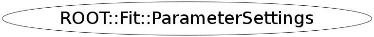

class ROOT::Fit::ParameterSettings
Class, describing value, limits and step size of the parameters Provides functionality also to set/retrieve values, step sizes, limits and fix the parameters. To be done: add constraints (equality and inequality) as functions of the parameters @ingroup FitMain
This class is also known as (typedefs to this class)
vector<ROOT::Fit::ParameterSettings,allocator<ROOT::Fit::ParameterSettings> >::value_typeFunction Members (Methods)
public:
| ~ParameterSettings() | |
| void | Fix() |
| bool | HasLowerLimit() const |
| bool | HasUpperLimit() const |
| bool | IsBound() const |
| bool | IsDoubleBound() const |
| bool | IsFixed() const |
| double | LowerLimit() const |
| const string& | Name() const |
| ROOT::Fit::ParameterSettings& | operator=(const ROOT::Fit::ParameterSettings&) |
| ROOT::Fit::ParameterSettings | ParameterSettings() |
| ROOT::Fit::ParameterSettings | ParameterSettings(const ROOT::Fit::ParameterSettings&) |
| ROOT::Fit::ParameterSettings | ParameterSettings(const string& name, double val) |
| ROOT::Fit::ParameterSettings | ParameterSettings(const string& name, double val, double err) |
| ROOT::Fit::ParameterSettings | ParameterSettings(const string& name, double val, double err, double min, double max) |
| void | Release() |
| void | RemoveLimits() |
| void | Set(const string& name, double value) |
| void | Set(const string& name, double value, double step) |
| void | Set(const string& name, double value, double step, double lower, double upper) |
| void | SetLimits(double low, double up) |
| void | SetLowerLimit(double low) |
| void | SetName(const string& name) |
| void | SetStepSize(double err) |
| void | SetUpperLimit(double up) |
| void | SetValue(double val) |
| double | StepSize() const |
| double | UpperLimit() const |
| double | Value() const |
Data Members
private:
Class Charts
{kind=link}
{kind=link}
{kind=link}
{kind=link}

Function documentation
ParameterSettings(const string& name, double val, double err)
constructor for unlimited named Parameter
{} ParameterSettings(const string& name, double val, double err, double min, double max)
constructor for double limited Parameter
SetLimits(double low, double up)
SetName(const string& name)
SetValue(double val)
SetStepSize(double err)
void Set(const string& name, double value, double step, double lower, double upper)
set a limited parameter
Fix()
double Value() const
copy constructor and assignment operators (leave them to the compiler) return parameter value
{ return fValue; }bool IsDoubleBound() const
check if is double bound (upper AND lower limit)
{ return fHasLowerLimit && fHasUpperLimit; }